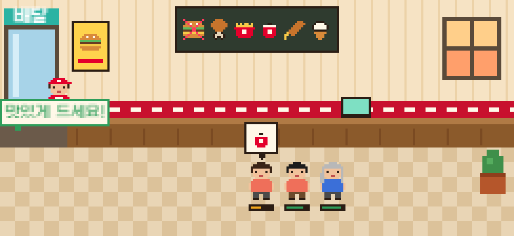
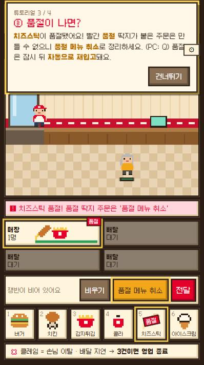
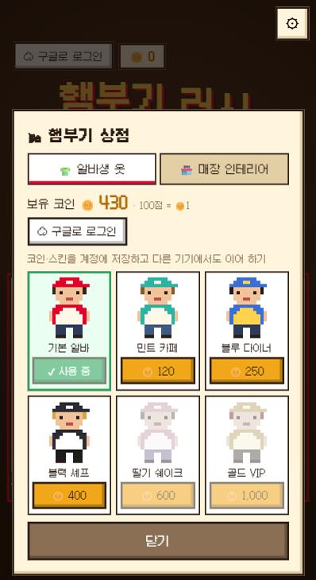
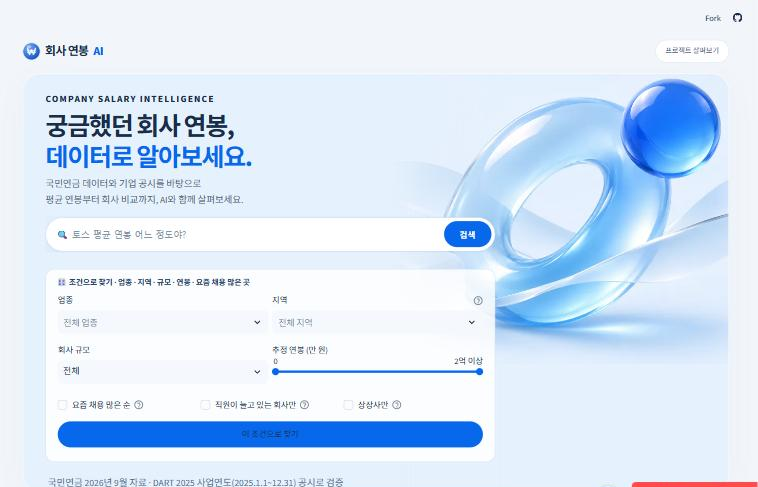
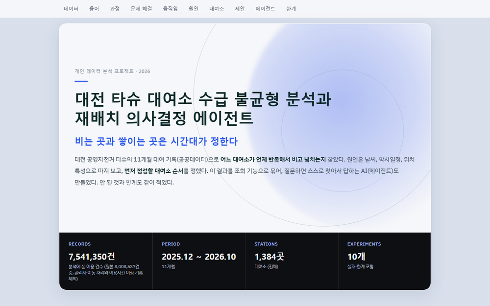
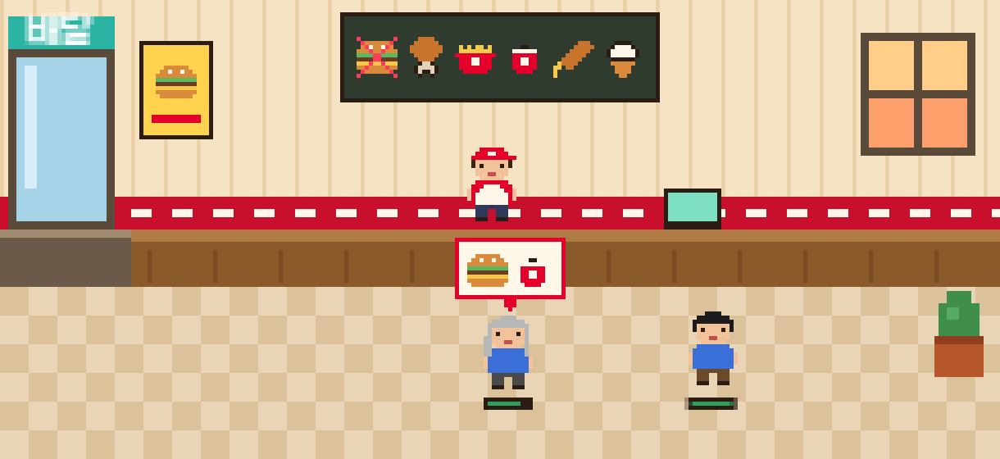

0번
이틀 동안 고친 횟수
매장에서는 품절된 메뉴로 주문이 들어오면 손님께 사과하고 환불해 드려야 했습니다. 그 상황을 60초짜리 게임으로 만들었습니다.
코드는 Claude Code로 짰고, 규칙과 수정 방향은 직접 정했습니다.
11월 23일에 첫 버전을 만들어 몇 명에게 먼저 해 보게 했고, 다음 날 동기들에게 공개해 받은 피드백까지 반영하며 v20까지 고쳤습니다. 버전마다 무엇을 왜 바꿨는지 개발 로그에 적어 두었습니다.
처음엔 품절이 나면 키오스크와 배달앱을 둘 다 직접 꺼야 하는 규칙이 이 게임의 핵심이라고 생각했습니다. 매장에서 실제로 제일 자주 사고가 나던 지점이었기 때문입니다. 그런데 교육 동기들이 있는 Slack과 인스타그램 스토리에 올리고 나니 "버튼이 너무 많아서 모르겠다"는 말이 먼저 돌아왔습니다. 결국 그 버튼 12개를 빼고, 품절은 시간이 지나면 다시 팔리게 바꿨습니다.

매장 손님과 배달 주문이 같이 몰려옵니다. 주방에서 메뉴를 담아 전달하면 맞는 주문으로 알아서 갑니다. 5번 연속 성공하면 6초 동안 점수가 두 배입니다.
중간에 메뉴가 품절되면 이미 들어온 주문을 품절 메뉴 취소로 정리해야 합니다. 8초 뒤 다시 들어옵니다. 손님이 떠나거나 배달이 늦어 클레임이 3건 쌓이면 영업 종료입니다.
| 상황 | 나제가 정한 것 | AIAI에게 맡긴 것 |
|---|---|---|
| v1이 "그냥 서빙 게임" | 해 보니 너무 단순했습니다. 배달 주문을 넣고, 이모지 대신 도트 그림으로 알바생·손님·라이더를 그리자고 했습니다 | 도트 스프라이트를 코드로 그리고(외부 이미지 0), 매장 장면·걷기 애니메이션 구현 |
| 주문표를 골라야 서빙 | 주문표를 하나하나 고르는 게 답답했습니다. 담은 대로 내면 맞는 주문으로 알아서 가게 바꿨습니다 | 매장·배달 주문 중 가장 급한 것과 자동 매칭하는 로직 |
| 소리가 없다 | 햄버거 가게 느낌은 내고 싶은데 외부 음원은 저작권이 걱정됐습니다. 그래서 외부 음원 없이 코드로 소리를 만들기로 했습니다 | Web Audio로 다이너풍 칩튠 작곡·합성, 효과음 10여 종 |
| 배포 전 전체 점검 | 공개 전에 사이트를 처음부터 끝까지 돌려 보게 했고, 결과에서 러시 점수 비중이 너무 높은 것을 이상하다고 봤습니다 | 자동 플레이 테스트. 원인은 러시가 끝나지 않는 버그였습니다. 고친 뒤 9.9초에 끝나는 것까지 확인 |
| 랭킹을 모두가 봐야 함 | 랭킹은 모두가 같이 봐야 의미가 있었습니다. 대신 남의 기록은 못 지우게 보기와 추가만 열어 두기로 했습니다 | Supabase 테이블·권한 설정 안내, 수정·삭제 요청이 실제로 막히는지 테스트 |
| PC에서 화면이 좁다 | 그림을 늘리면 도트가 뭉개져서, 크기는 두고 매장을 양옆으로 넓히는 쪽을 골랐습니다 | 화면 비율에 맞춰 매장 폭을 계산해 다시 그리는 반응형 로직, PC·모바일 캡처로 확인 |
자동 플레이 테스트 결과를 보니 43,752점 중 39,704점이 러시 점수였습니다. 보너스 하나가 점수를 이만큼 차지하는 건 이상해서 원인을 찾아보게 했습니다. 러시 남은 시간을 줄이는 코드가 잘못된 위치에 있어서 생긴 러시가 거의 끝나지 않는 버그였습니다. 고친 뒤 버그 영향을 받은 랭킹은 초기화했습니다.

| 해 보니 불편했던 것 | 바꾼 것 | 이유 |
|---|---|---|
| "클레임 폭주"로 끝났는데 왜 끝났는지 모름 | 클레임 기준을 시작·상단·종료 화면에 표시 | 왜 졌는지 알아야 다음 판에 고칠 수 있음 |
| 게임 시간 90초가 길다 | 50·60·70초를 해 보고 60초로 | 50초는 품절 사이클과 러시를 다 겪기 전에 끝남 |
| 점수 단위(원)가 너무 큼 | 1/10로 바꾸고 100점 = 코인 1개 | 코인 버는 속도는 그대로라 상점 가격은 안 바꿔도 됨 |
| 첫 판에 규칙이 어렵다 | 튜토리얼을 넣었다가, "1분은 길다"는 말에 30초로 줄이고 선택하게 | 바로 하고 싶은 사람에겐 튜토리얼이 방해가 됨 |
| 튜토리얼 → 실전 전환을 모름 | "튜토리얼 완료!" + 3·2·1 카운트다운 | 시작 시점이 분명해야 준비할 수 있음 |
| 같은 닉네임이면 누구 기록인지 모름 | 보이지 않는 플레이어 번호로 구분, 같은 이름만 #태그 | 가볍게 하는 게임에서 이름까지 막으면 번거로움 |
| 점수와 별개로 계속할 이유 | 코인 + 상점(옷 6종·인테리어 6종) | 점수 말고도 모으는 재미가 있어야 다시 하게 됨 |
버튼 12개는 제 경험에서 나온 규칙이라 빼기 아쉬웠습니다. 하지만 첫 판에서 헤매면 그 규칙까지 가 보지도 못하고 끝난다고 판단했습니다.
| Supabase | 전체 공개 랭킹. 보기·추가만 허용하고 수정·삭제는 막는 권한을 직접 검증 |
| Firebase | 이전 프로젝트에서 쓰던 구글 로그인을 가져와 코인·스킨을 계정에 저장 |
| Web Audio | 음원 파일 없이 코드로 배경음악·효과음 합성 |
| Clarity | 어디서 그만두는지, 점수가 어떻게 나오는지 보려고 연결 |

세 프로젝트 모두 코드는 Claude Code와 함께 작성했습니다.


게임을 처음부터 끝까지 만들어 본 건 이번이 처음이었습니다. 이틀 동안 스무 번을 고쳤는데도, 제일 큰 문제는 Slack과 인스타그램에서 다른 사람들이 해 보고 나서야 보였습니다. 그래서 실제 플레이어를 보며 게임을 고치는 팀에서 일해 보고 싶습니다. 현업에서는 AI를 어디까지 맡기고 어디서 사람이 판단하는지도 가까이에서 배우고 싶습니다.
